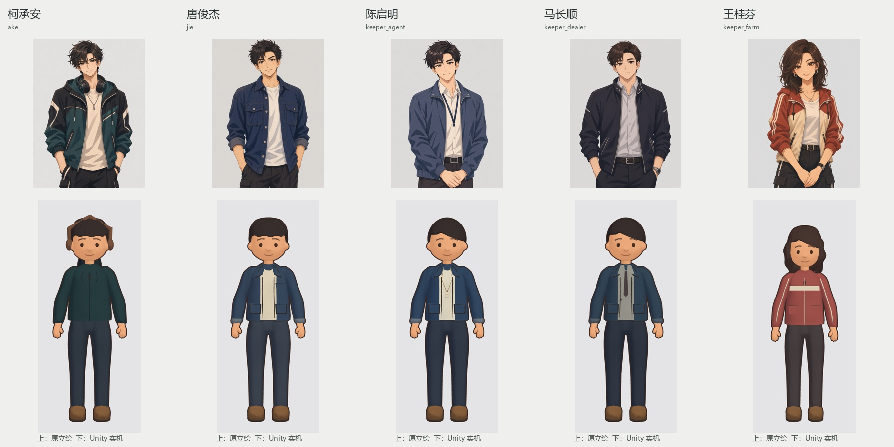
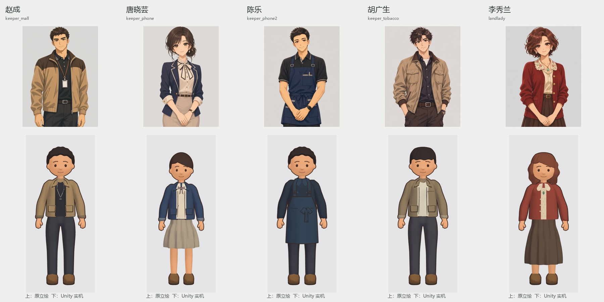
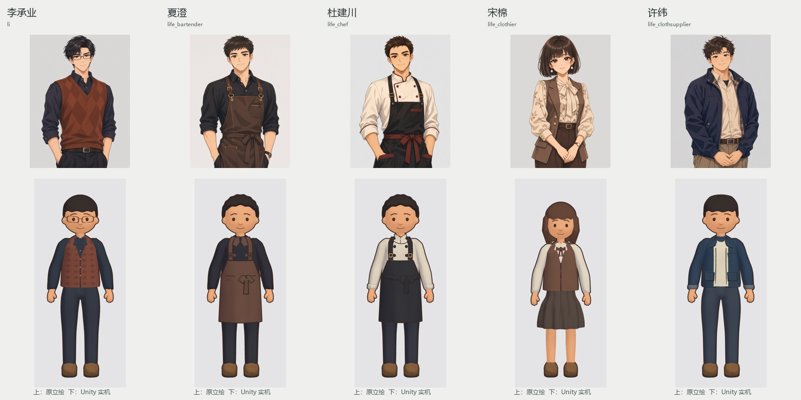
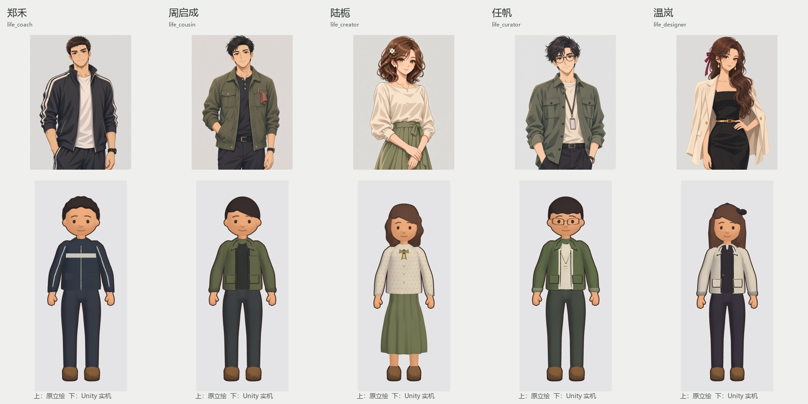
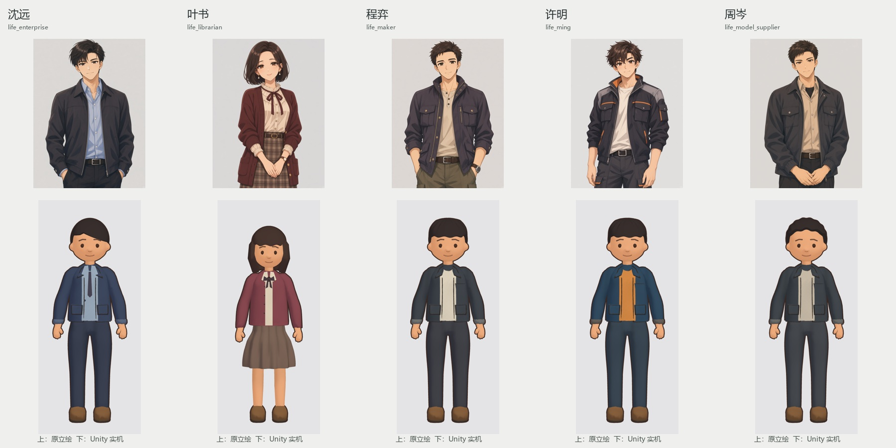
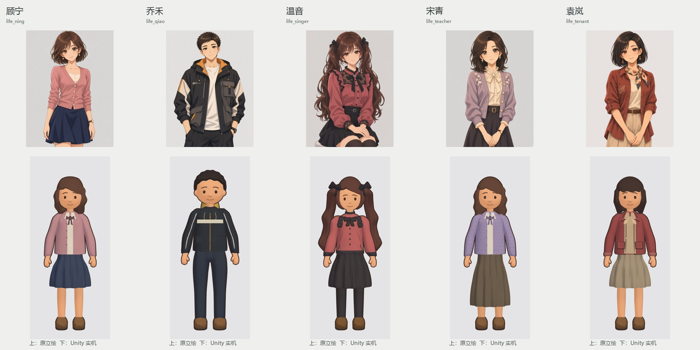
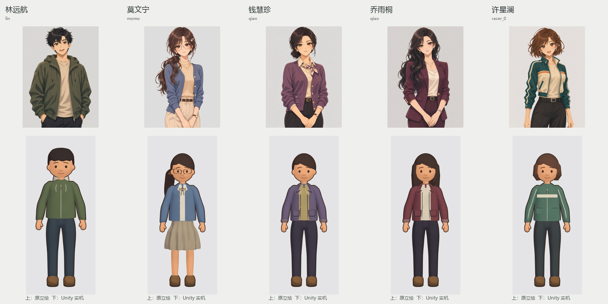
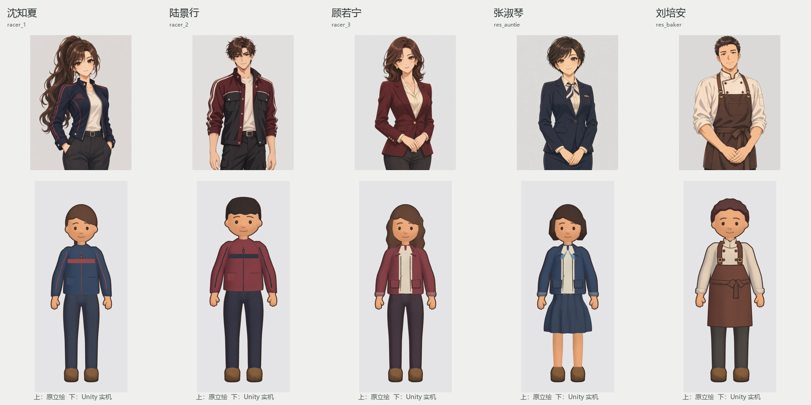

01-主要人物
正式人物入口生成的真实 Unity 三维模型。上方原立绘只核对身份、发型和服装；身体比例沿用已确认的三人母版。点击小图查看原始截图。未补画渲染帧。
第 1 组：柯承安、唐俊杰、陈启明、马长顺、王桂芬

第 2 组：赵成、唐晓芸、陈乐、胡广生、李秀兰

第 3 组：李承业、夏澄、杜建川、宋棉、许纬

第 4 组：郑禾、周启成、陆栀、任帆、温岚

第 5 组：沈远、叶书、程弈、许明、周岑

第 6 组：顾宁、乔禾、温音、宋青、袁岚

第 7 组：林远航、莫文宁、钱慧珍、乔雨桐、许星澜

第 8 组：沈知夏、陆景行、顾若宁、张淑琴、刘培安

第 15 组：警务人员、维修工、屋顶维修工、走失儿童、现场裁缝甲